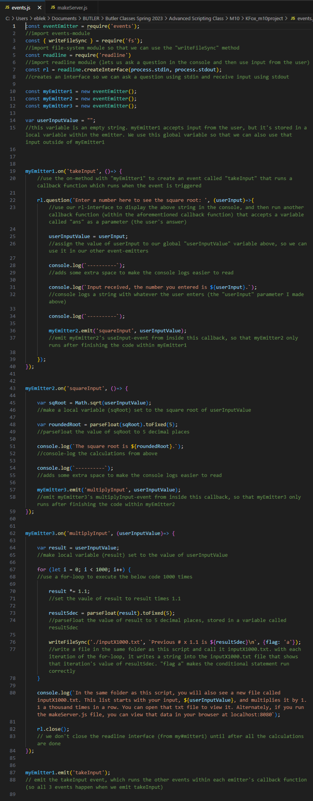
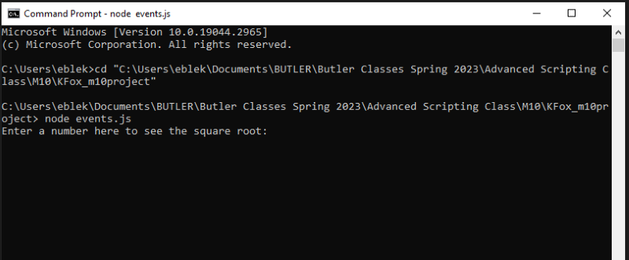
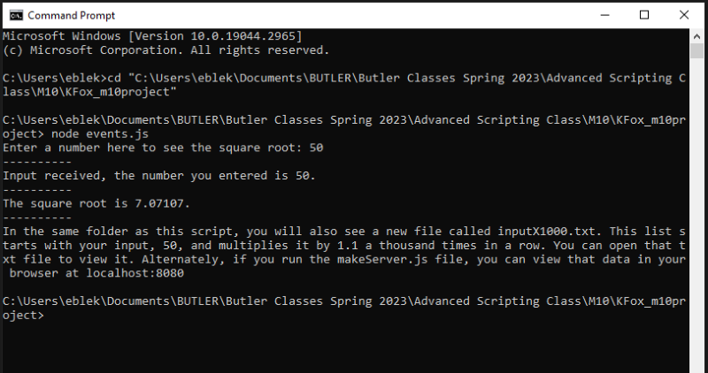
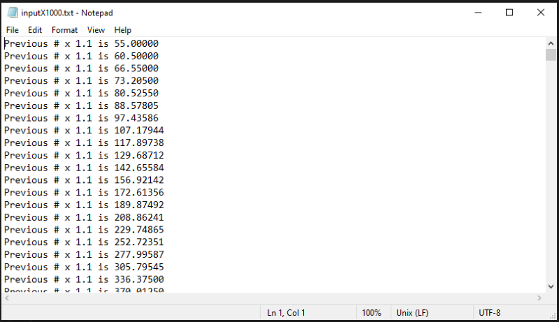
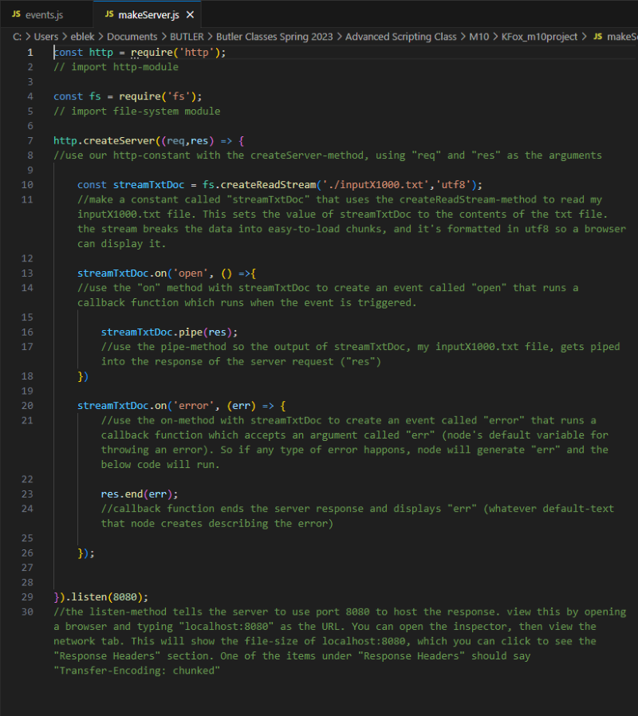
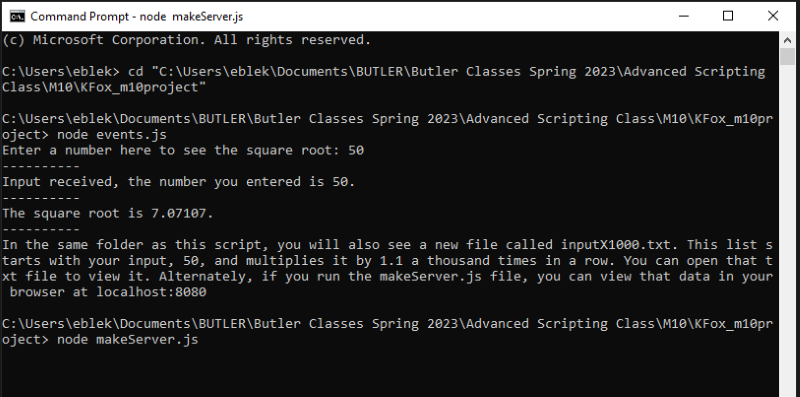
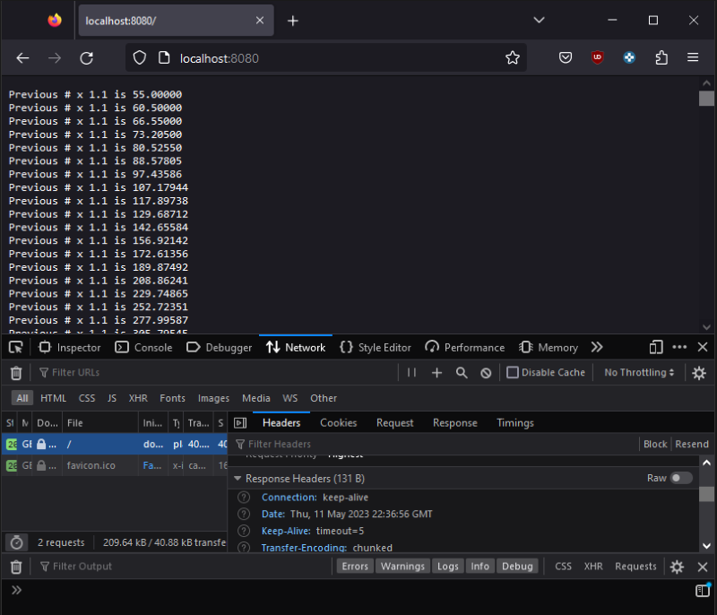

M10 Project
For this project, I made a script that creates 3 event emitters that accept an argument, make calculations with it, and write those calculations in a text-document. Then I made a second script that streams the text-document to a server which can be viewed in the browser.
For reference, you can learn more about events and streams from the M10 Events Exercise and the M10 Streams Exercise.
The first document in my project is a script called events.js that uses event emitters to accept user input and create a .txt document
When we run events.js in the console, we get the aforementioned output as well as our newly created inputX1000.txt file.
  The makeServer.js script creates a server and streams the text document.
Below, we see the results of running makeServer.js in the console.
 